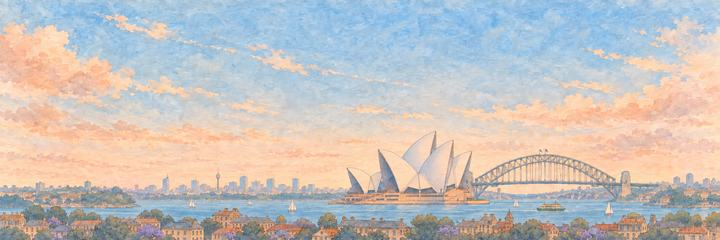
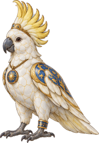
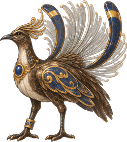

Sydney paper plane game
See the opera house that looks like a boat full of sails.
Pick a height before the harbour. Get past the cockatoo, then the lyrebird.
Around the harbour
Aboriginal people lived around the harbour for many thousands of years before 26 January 1788, when a British fleet of 11 ships landed convicts and marines at Sydney Cove. The convict settlement grew into Australia's oldest city, spread around the arms of a vast natural harbour.
“I'd count the ferries criss-crossing the harbour.”
The landmarkThe sails on the harbour
Danish architect Jørn Utzon won the design contest in 1957 with shell-like roofs. He left Australia in 1966, before the building was finished, and it opened in 1973. Its roofs wear more than a million white and cream tiles, and in 2007 it became a World Heritage Site.
Who keeps the wish in Sydney.
An Elite wakes first; the Boss guards the wish itself. Hit their weak points for a BONK!, land the last blow for a KO!, and each one grins and takes a bow.
-
The Elite


The Cockatoo
Lord of the park · Keeper of Sydney's streets
Sydney's sulphur-crested cockatoos taught each other to flip open the lids of wheelie bins. Scientists followed the trick as it spread from suburb to suburb, from 3 suburbs in 2018 to 44 by the end of 2019, and found each neighbourhood's birds had their own way of doing it.
The cockatoo raises its yellow crest and looks the plane up and down. The cockatoo screeches, shakes out its feathers and stays put. The cockatoo folds its crest, bows and flies off to the nearest bin.
“I'd leave the bin lid open for it.”
-
The Boss

The Lyrebird
The great mimic · Keeper of the forest's songs
The superb lyrebird can copy almost any sound it hears: other birds, camera shutters, even chainsaws. It lives in the forests around Sydney, and its lyre-shaped tail has been on Australia's ten-cent coin since 1966.
The lyrebird fans its silver tail and starts copying the plane's hum. The lyrebird skips a note, then sings on. The lyrebird folds its tail, bows and goes quiet.
“I'd ask it to sing my plane back to me.”
Sydney cleared. The sails were really made of tiles.
- The cockatoo bowed like it owned the place. It probably does.
- The lyrebird sang my own plane back to me. I didn't know it sounded like that.
The plane reaches Sydney from Tokyo. Clear it and the map opens the way to San Francisco. Its own plane look is Jacaranda Blossom, a trail look.